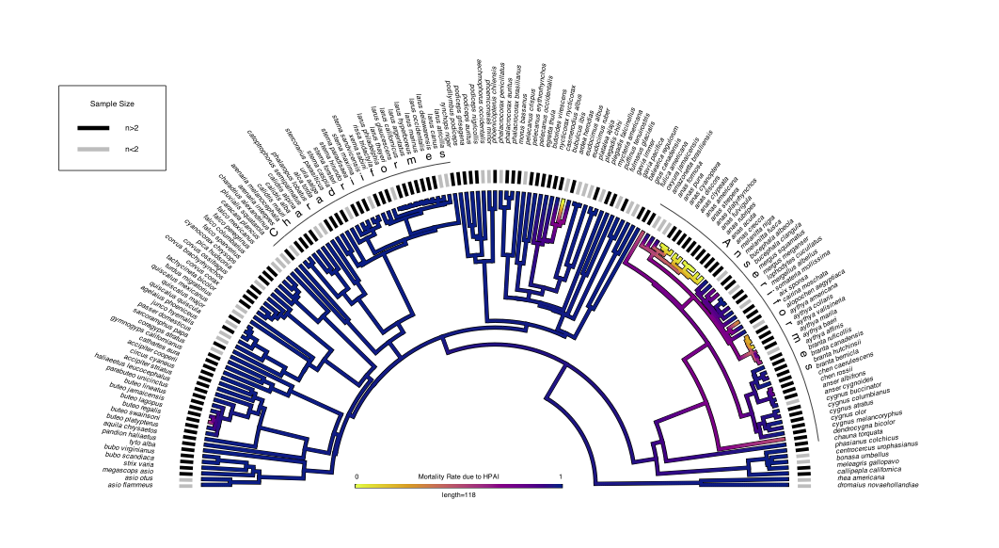

pacman::p_load(phytools,
ggplot2,
ggthemes,
tidyverse,
geiger,
knitr,
phangorn,
rethinking)Mortality to HPAI and Trees
analysis
phylogenetics
A Short R document detailing a analysis on HPAI and mortality from a phylogenetic standpoint
Wild Bird Mortality and Highly Pathogenic Avian Influenza
A ‘short’ R script by Jonathan Dain.
Goal: We want to understand the mortality rates in while birds due to HPAI and how it relates to the underlying phylogeny that connects bird species. So let’s dive in.
Load some packages.
Load some data.
Our data comes from multiple sources so I will load each one and give a brief overview of each. To start we need to get our raw data about mortality in wild birds due to HPAI. This data come from the USDA website. It is a collection of observations of HPAI in wild birds. Admittedly this is a very sparse dataset and I know that alot of their observations are oppourtunistic rather than focused searching….but its what we got so lets put it to work.
raw_usda <- read_csv(file = "data/hpai-wild-birds (1).csv")
head(raw_usda) |> kable()| State | County | Collection Date | Date Detected | HPAI Strain | Bird Species | WOAH Classification | Sampling Method | Submitting Agency |
|---|---|---|---|---|---|---|---|---|
| South Carolina | Colleton | 12/30/2021 | 01/13/2022 | EA H5N1 | American wigeon | Wild bird | Hunter harvest | NWDP |
| South Carolina | Colleton | 12/30/2021 | 01/13/2022 | EA H5N1 | Blue-winged teal | Wild bird | Hunter harvest | NWDP |
| North Carolina | Hyde | 12/30/2021 | 01/12/2022 | EA H5N1 | Northern shoveler | Wild bird | Hunter harvest | NWDP |
| North Carolina | Hyde | 01/08/2022 | 01/20/2022 | EA H5N1 | American wigeon | Wild bird | Hunter harvest | NWDP |
| North Carolina | Hyde | 01/08/2022 | 01/20/2022 | EA H5 | Gadwall | Wild bird | Hunter harvest | NWDP |
| North Carolina | Hyde | 01/08/2022 | 01/20/2022 | EA H5 | Gadwall | Wild bird | Hunter harvest | NWDP |
Ok the other dataset that we will need is a species lookup file that I have made for replacing common names with species names. It takes as input a common name - often poorly spelled - and replaces it with the correctly spelled latin name. It can also add in some other useful bits which we will look at later.
Species_Lookup <- readRDS(file = "/Users/jonathandain/My_Files/My_Code/Species_Lookup_Sheet/Species_Lookup_20240323.rds")
head(Species_Lookup) |> kable()| alt.common.name | type | scientific.name | enlish.name.ebird | order | family |
|---|---|---|---|---|---|
| african crowned crane | Other | balearica regulorum | gray crowned-crane | gruiformes | gruidae (cranes) |
| american black duck | Dabbling duck | anas rubripes | american black duck | anseriformes | anatidae (ducks, geese, and waterfowl) |
| american blue-winged teal | Dabbling duck | spatula discors | blue-winged teal | anseriformes | anatidae (ducks, geese, and waterfowl) |
| american coot | Other | fulica americana | american coot | gruiformes | rallidae (rails, gallinules, and coots) |
| american crow | Other | corvus brachyrhynchos | american crow | passeriformes | corvidae (crows, jays, and magpies) |
| american green-winged teal | Dabbling duck | anas crecca | green-winged teal | anseriformes | anatidae (ducks, geese, and waterfowl) |
Finally as you might be wondering we need a bird phylogenetic tree! Thankfully the hard work of actually producing a bird tree has been done for us by the lovely people at BirdTree, we just get to reap the benefits.
allbirdtree <- readRDS(file = "data/allbirdtree.rds")
#note this is a massive multiphylo object so it may take a smidge of time to load.Ok now that our data is loaded we can move onto some data wrangling. Which is the second most fun part of any research question.
Data Wrangling.
Ok first we need to do some data wrangling to make this USDA data usable.let’s first deal with the getting a sense of the data and if these birds are alive or dead when sampled. In other words what is the disease phenotype.
### make a copy of the data
d <- raw_usda |>
mutate_all(.funs = tolower) #make the names lowercase
### look at the sampling methods as levels
levels(as.factor(x = d$`Sampling Method`)) |> kable(col.names = 'Sampling Method')| Sampling Method |
|---|
| agency harvest |
| hunter harvest |
| live bird |
| morbidity/mortality |
Ok here lies one of the key assumptions I am going to make about this dataset. Given that the hunter harvested and agency harvested birds were likely out moving/behaving naturally prior to their “removal” I think it is fair to assume that these birds did not exhibit any symptomatic behavior of HPAI. That is also true for the live birds.
This is of course opposed to the birds in the “morbidity/mortality” group which likely did exhibit symptoms of HPAI.
We are going to want to label the two harvest and live bird methods as “healthy/alive birds” and then the mortality birds as ‘dead’.
#to do that we need to get some indices.
hunt <- which(d$`Sampling Method`=="hunter harvest")
live <- which(d$`Sampling Method`=="live bird")
agent <- which(d$`Sampling Method`=="agency harvest")
dead <- which(d$`Sampling Method`=='morbidity/mortality')
#now we just need a status column
d <- d |>
mutate(status="NA")
#now we can just manually change these to what we want.
d$status[hunt] <- "alive"
d$status[live] <- "alive"
d$status[agent] <- 'alive'
d$status[dead] <- "symptomatic"
#just double check our work.
levels(as.factor(x = d$status)) [1] "alive" "symptomatic"Ok now we can trim down to the data we would like and do a few edits. I changed the output of this next code chunk to FALSE, but really all I am doing is trimming down to the columns that I want, removing a single case of NA and making the common names lower case.
#ok sweet so lets just trim our data a little
d <- d |>
select(`HPAI Strain`,`Date Detected`,`Bird Species`,status)
# unique(d$`HPAI Strain`) - This shows a single "NA"
#' there are alot of different strains but one is NA let's remove that.
which(is.na(d$`HPAI Strain`))
d <- d[-674,] #remove by negative indexing
### Let's add our species names to this dataset.
d <- d |>
mutate(sci.name="NA",`Bird Species`=tolower(`Bird Species`))Now we can actually replace the common names with our species name to make a clean and tidy data set. We are going to do that with a four loop that I built to interface with our species lookup sheet.
#lets change some names with my function from the species lookup
for(i in 1:nrow(d)){ #loops through the rows
host <- d$`Bird Species`[i] #finds the host name
host
if (host %in% Species_Lookup$alt.common.name){ #checks to see if it's in the data
y <- which(Species_Lookup$alt.common.name==host) #gets an index
y
d$sci.name[i] <- Species_Lookup$scientific.name[y] #replaces it with a species
d$sci.name[i]
}
}
#unique(d$sci.name) #look for any NA's
#Check to make sure that all the values go through.
d |>
filter(sci.name=="NA")# A tibble: 0 × 5
# ℹ 5 variables: HPAI Strain <chr>, Date Detected <chr>, Bird Species <chr>,
# status <chr>, sci.name <chr>Nice it looks like we did not get any NA’s which can sometimes happen if there is a new mispelling of a common name that needs to be added to the lookup file. Here we seem to be good so we can continue.
We should note however that some of these ‘species’ names are note real but rather have something like ‘finch spp’ for example. This is because the common name was not identifiable with a true species. Because we are looking at species level data we need to make sure that we only have true species in our dataset so we can remove them.
#' lets remove them by filtering out the string that have
#' the pattern " spp"
d |>
filter(!str_detect(sci.name,pattern = " spp")) -> d.clean
# that was alot of work let's save the progress
#saveRDS(object = d.clean,file = "data/d.clean_20240328.rds")The final step in our data wrangling is getting our actual trait data. So far all we have done is rearange some columns and fix some names. Lets get some actual data. To do that we are going to make use of the fact that you can group things by species name and then summarise the results. Lets pivot that data into a format where the rows are species rather than observations.
d.trait <- d.clean %>% #get the data
group_by(sci.name, status) %>% #group it
summarize(n = n()) %>% #count it!
pivot_wider(names_from = status, values_from = n, values_fill = 0) #pivot it
head(d.trait, n=2) |> kable()| sci.name | symptomatic | alive |
|---|---|---|
| accipiter cooperii | 31 | 0 |
| accipiter striatus | 6 | 0 |
Now we can calculate mortality and tolerance from this data!
d.trait <- d.trait |>
mutate(total_cases=symptomatic+alive) |>
mutate(tolerance=alive/total_cases,
mortality=symptomatic/total_cases)
head(d.trait,n=5) |> kable()| sci.name | symptomatic | alive | total_cases | tolerance | mortality |
|---|---|---|---|---|---|
| accipiter cooperii | 31 | 0 | 31 | 0.0000000 | 1.0000000 |
| accipiter striatus | 6 | 0 | 6 | 0.0000000 | 1.0000000 |
| aechmophorus occidentalis | 1 | 0 | 1 | 0.0000000 | 1.0000000 |
| agelaius phoeniceus | 1 | 0 | 1 | 0.0000000 | 1.0000000 |
| aix sponsa | 88 | 198 | 286 | 0.6923077 | 0.3076923 |
Amazing we now have a datafram that we can begin to ask some questions about. Let’s shift to thinking about the actual phylogenetic tree because having a multiphylo is not the same as having a single tree (its better but thats besides the point).
Pruning Trees.
Ok in because this is a multiphylo we need to make a single maximum clade credibility tree before we do anything further. We can do that easily with the function mcc() in Phangorn.
set.seed(seed = 700) #just a see that I like.
#' I commented the below out for berevity but
#' you can follow it along to see
#' what I did.
# mcc.tree <- mcc(x = sample(allbirdtree,size = 100,replace = F),
# tree = T,
# rooted = T)
# mcc.tree
#saveRDS(object = mcc.tree,file = "data/mcc.tree.RDS")
mcc.tree <- readRDS(file = "data/mcc.tree.RDS")Awesome now we have a single tree - a single VERY large tree - that we can now trim to our taxa of interest. This is where those species names come in hand.
#' nice now we have a tree! Unforunately it is way too many tips so we need to prune it.
mcc.tree$tip.label <- tolower(mcc.tree$tip.label) #just lowering the names case
#pull out the names I want to keep
names <- d.trait$sci.name
names <- str_replace(string = names,pattern = " ",replacement = "_")
#pruned.mcc.tree <- keep.tip(phy = mcc.tree,tip=names)
#^ you would get an error if you ran keep.tip()Oh noo we get an error! JK, I knew that was going to happen. There is a few problems with some of the scientific names. In reality this is a problem between eBird and BirdTree but I will let it slide for now. We can work around it and fix it. Let’s just get the names we need to fix and then adjust them.
#lets add a BirdTree/Avonet column
d.trait <- d.trait |>
mutate(avonet.name='NA')
#most of the names in sci.name are good but I there are a few to change. Let's do that and also make them lowercase
d.trait <- d.trait |>
group_by(sci.name) |>
mutate(avonet.name=str_replace(string = sci.name,pattern = ' ',replacement = '_'))
#' let's see which of my names actually need to change.
chk.d.trait <- name.check(phy = mcc.tree,data = d.trait,data.names = d.trait$avonet.name)
summary(chk.d.trait) # Notice there are 28 taxa in my data that are not in my tree (yet)9860 taxa are present in the tree but not the data:
abeillia_abeillei,
abroscopus_albogularis,
abroscopus_schisticeps,
abroscopus_superciliaris,
aburria_aburri,
acanthagenys_rufogularis,
....
28 taxa are present in the data but not the tree:
anser_caerulescens,
anser_rossii,
antigone_canadensis,
ardea_alba,
ardenna_tenuirostris,
bubo_scandiacus,
....
To see complete list of mis-matched taxa, print object.#lets pull out those names to look at,
names.to.check <- chk.d.trait$data_not_tree
#let's also get an indiex for those names to make them NA's
index <- which(d.trait$avonet.name%in%names.to.check)
#lets replace these names to fix with NA's
d.trait$avonet.name[index] <- "NA"Ok so we have these names to fix, how are we actually going to fix them. Well I have run into this before on a prior project so I have this other dataset that I am going to load in just so I can steal the “BirdTree/Avonet” names from it.
bv_data <- read.csv(file = "/Users/jonathandain/My_Files/My_UMB_Courses/BIO634_Phylogenetics/Final_Project/Report/BV_cleaned_12APR2023_v2.csv")Now we can replace the names with this dataset just like we did above with the species lookup file. By the way the eBird names of these two datasets match, how do I know that? Because I made it that way haha.
# replace the names with the BV.data
i=1
for(i in 1:nrow(d.trait)){
host <- d.trait$sci.name[i]
host
host <- gsub(x = host,pattern = ' ',replacement = '_')
if (host %in% bv_data$species){
y <- which(bv_data$species==host)
y
x <- unique(bv_data$Avonet_name[y])
x
d.trait$avonet.name[i] <- x
# data$sci.name[i]
}
}
#lets see if this worked
d.trait |>
filter(avonet.name=="NA") |> kable()| sci.name | symptomatic | alive | total_cases | tolerance | mortality | avonet.name |
|---|---|---|---|---|---|---|
| antigone canadensis | 13 | 0 | 13 | 0 | 1 | NA |
| ardenna tenuirostris | 3 | 0 | 3 | 0 | 1 | NA |
| charadrius nivosus | 5 | 0 | 5 | 0 | 1 | NA |
| chroicocephalus philadelphia | 2 | 0 | 2 | 0 | 1 | NA |
| circus hudsonius | 3 | 0 | 3 | 0 | 1 | NA |
| hydroprogne caspia | 26 | 0 | 26 | 0 | 1 | NA |
| larus glaucoides thayeri | 1 | 0 | 1 | 0 | 1 | NA |
| nannopterum brasilianum | 3 | 0 | 3 | 0 | 1 | NA |
| spatula puna | 1 | 0 | 1 | 0 | 1 | NA |
| thalasseus maximus | 9 | 0 | 9 | 0 | 1 | NA |
| urile penicillatus | 1 | 0 | 1 | 0 | 1 | NA |
Ok now it looks like there are just 11 names to fix instead of the 28 that there were before. Thats totally fine we can do that many by hand. We will tackle this by some simple indexing.
#' Ok so just these lat 11 need to be fixed.
which(d.trait$sci.name=="antigone canadensis")
d.trait$avonet.name[18] <- "grus_canadensis"
which(d.trait$sci.name=="ardenna tenuirostris")
d.trait$avonet.name[22] <- "puffinus_tenuirostris"
which(d.trait$sci.name=="charadrius nivosus")
d.trait$avonet.name[59] <- "charadrius_alexandrinus"
which(d.trait$sci.name=="chroicocephalus philadelphia")
d.trait$avonet.name[61] <- "larus_philadelphia"
which(d.trait$sci.name=="circus hudsonius")
d.trait$avonet.name[62] <- "circus_cyaneus"
which(d.trait$sci.name=="hydroprogne caspia")
d.trait$avonet.name[88] <- "sterna_caspia"
which(d.trait$sci.name=="larus glaucoides thayeri")
d.trait$avonet.name[95] <- "larus_thayeri"
which(d.trait$sci.name=="nannopterum brasilianum")
d.trait$avonet.name[113] <- "phalacrocorax_brasilianus"
which(d.trait$sci.name=="spatula puna")
d.trait$avonet.name[147] <- "anas_puna"
which(d.trait$sci.name=="thalasseus maximus")
d.trait$avonet.name[154] <- "sterna_maxima"
which(d.trait$sci.name=="urile penicillatus")
d.trait$avonet.name[160] <- "phalacrocorax_penicillatus"Amazing now we have all the right species names.
Oh I forgot let’s say we wanted to also put in the order and family that these birds come from. We can also do that with our species lookup file. Let’s just do that as well while we are at it. I think it will come in handy later…..
d.trait <- d.trait |>
mutate(type="NA",
order="NA",
family="NA")
#we can use the same four loop function format as above.
for(i in 1:nrow(d.trait)){
host <- d.trait$sci.name[i]
host
host <- str_replace(string = host,pattern = "_",replacement = " ")
host
if (host %in% Species_Lookup$scientific.name){
y <- which(Species_Lookup$scientific.name==host)
y
type <- unique(Species_Lookup$type[y])
type
d.trait$type[i] <- type
fam <- unique(Species_Lookup$family[y])
fam
d.trait$family[i] <- fam
order <- unique(Species_Lookup$order[y])
order
d.trait$order[i] <- order
# data$sci.name[i]
}
}
#looks like there was one error with the thayers gull lets fix that!
which(d.trait$avonet.name=="larus_thayeri")
d.trait$order[95] <- 'charadriiformes'
d.trait$family[95] <- 'laridae (gulls, terns, and skimmers)'
#one more fix sorry.
which(d.trait$family=="natidae (ducks, geese, and waterfowl)")
d.trait$family[32] <- 'anatidae (ducks, geese, and waterfowl)'Alright few that took a while but now that we have all the names we can actually prune the tree and then get to plotting this yay.
chk.d.trait <- name.check(phy = mcc.tree,
data = d.trait,
data.names = d.trait$avonet.name)
summary(chk.d.trait)9832 taxa are present in the tree but not the data:
abeillia_abeillei,
abroscopus_albogularis,
abroscopus_schisticeps,
abroscopus_superciliaris,
aburria_aburri,
acanthagenys_rufogularis,
....
To see complete list of mis-matched taxa, print object.#' ok let's prune the tree finally!
pruned.mcc.tree <- keep.tip(phy = mcc.tree,tip = d.trait$avonet.name)
pruned.mcc.tree
Phylogenetic tree with 161 tips and 160 internal nodes.
Tip labels:
dromaius_novaehollandiae, rhea_americana, callipepla_californica, meleagris_gallopavo, bonasa_umbellus, centrocercus_urophasianus, ...
Node labels:
NA, 0.63, 1, 1, 1, 1, ...
Rooted; includes branch lengths.Looks like we finally have a tree. The last thing to do is make sure our data and the tree have the same order in terms of rows.
#one final thing let's make sure that it is in the right order
row_index <- match(x = pruned.mcc.tree$tip.label,table = d.trait$avonet.name)
row_index
d.trait[row_index,] -> d.trait
#saveRDS(object = d.trait,file = "data/d.trait.clean_20240328.rds")Finally Plotting the tree.
Ok so now we can finally plot this thing. First I just want to chat briefly about what we are actually plotting. We are going to be using a function called contMap() from Phytools. What this will be doing is essentially using ancestral state reconstruction across the branches of the tree. We are trying to infer the changes in a continuous trait along the branches of a tree. What this will end up looking like in our case is a color gradient as the value for ‘mortality’ rate changes across the branches of the tree.
Ok with that said - there is alot more to it - lets actually plot this tree.
In order to plot this we need to extract our trait of interest into a named vector that we can pass to contMap to make the plot.
Initial Plot and Colors.
#read in your cleaned data
d.trait <- readRDS(file = "data/d.trait.clean_20240328.rds")
#d.trait |>
#mutate(weighted_tol=mortality*total_cases)
#pull the trait
mortality <- setNames(object =d.trait$mortality,nm = d.trait$avonet.name)
#make the base plot.
mort_cMap <- contMap(tree = pruned.mcc.tree,x = mortality,plot = T,ftype='off')
Yay we have….well we have something. It is not a very good visualization but don’t worry we can make it so much better.
Plotting for this type of a plot is going to be a really fun exercise in how well you know what is going on internally of a phylogenetic tree. Before we get there though lets mess with the colors a little bit to get a sense of which one we like the best.
To do this we are going to use the setMap function to change the color scheme. Then I am going to visualize it without the legend to save space.
#' Lets make four different color schemes.
a <- mort_cMap$cols # the original ones from the above plot
b <- rev(mort_cMap$cols) # the reverse of those colors.
c <- grey.colors(n = 30,start = 0) # a greyscale version cause I like that.
d <- hcl.colors(n = 25,palette = 'Sunset')
e <- hcl.colors(n = 25,palette = 'Geyser')
f <- rev(hcl.colors(n = 25,palette = 'Plasma'))
#now we can plot them
map_a <- setMap(x = mort_cMap,colors=a)
map_b <- setMap(x = mort_cMap,colors=b)
map_c <- setMap(x = mort_cMap,colors=c)
map_d <- setMap(x = mort_cMap,colors=d)
map_e <- setMap(x = mort_cMap,colors=e)
map_f <- setMap(x = mort_cMap,colors=f)
# now lets plot them.
M <- matrix(c(1,2,3,4,5,6),nrow = 3,ncol = 2,byrow=T)
layout(mat = M)
plot(map_a,ftype='off',legend=F,outline=F)
plot(map_b,ftype='off',legend=F,outline=F)
plot(map_c,ftype='off',legend=F,outline=F)
plot(map_d,ftype='off',legend=F,outline=F)
plot(map_e,ftype='off',legend=F,outline=F)
plot(map_f,ftype='off',legend=F,outline=F)
Ok I like the red one, ‘Geyser’ and the ‘Sunset’ one. Lets make those and see what they look like when we add the rest of the bits and bobs.
Ok so to make these presentable we need to do some really “sneaky” plotting of the phylogeny. Its really not all that sneaky but we are going to make use of the phylogenetic tree ‘under the hood’ as they say. We are going to use the internals of the tree to make something that is publication worth and that will serve as one of the intial figures on my dissertation.
Making our final set of plots.
First we need to add yet another row to our data set. Just a row to indicate sample size. We want this because this dataset is so sparse we want to know where we can ‘trust’ our analysis and where we might need to be a little skeptical. Adding this additional layer of information onto our tree also means we will need to do a little more sneaky plotting to add it but I will explain as I go. If you would like more details and so I give credit to the author of this hack you can see this blog post by Dr. Liam Revell the author of Phytools.
#add the colum and make a plotting tibble
plotting <- d.trait |>
mutate(size=ifelse(total_cases>=2,'n>2','n<2'))
plotting <- plotting |>
mutate(size=as.factor(size)) #just make it a factor
plotting <- as.data.frame(plotting)
#we make the tibble a dataframe because that is
#what phytools likes.Ok lets adjust and make this work.
h<-max(nodeHeights(mort_cMap$tree)) #gets the max height of the tree
sample.size<-mort_cMap$tree #makes a new tree to edit.
sample.size$edge.length[
which(sample.size$edge[,2]<=Ntip(sample.size))]<-
sample.size$edge.length[
which(sample.size$edge[,2]<=Ntip(sample.size))]+0.07*h
# ^ The above code piece just extends the tip length of the tree
levs1<-levels(as.factor(plotting$size)) #pulls factors
sample.size<-paintSubTree(sample.size,Ntip(sample.size)+1,"t")
# ^ This paints the tree transparent.
rownames(plotting) <- plotting$avonet.name
# ^ This gets the rownames on the data frame
for(i in 1:nrow(plotting)){
tip<-which(mort_cMap$tree$tip.label==
rownames(plotting)[i])
tip
sample.size<-paintSubTree(sample.size,node=tip,
state=levs1[plotting[i,"size"]],
stem=(0.05*h)/sample.size$edge.length[
which(sample.size$edge[,2]==tip)])
}
# ^ This paints the tips of my tree with
# the color of the sample size.
cols1<-setNames(c("transparent","black","grey"),
c("t",levs1))
# ^ This just colors the tips, and body of the treeOk that all looks rather convoluted and complex but it boils down to we basically added some length to the tips of our tree and then painted those tips based on the discrete character that we wanted to. In our case we make them grey if they have low sample size and black of they have a better sample size.
Ok so not to actually plot this the way we want with the sample size and all the fun colors we need to do one key thing. Plot the tree without plotting it. Yup we need to get the size of the space that the tree takes up with these new longer tips and then plot another tree on top of it.
#plot to get x and y lims of the space.
plot(mort_cMap,type="arc",ftype="i",arc_height=0.5*1.05,add=TRUE,lwd=3,fsize=0.6,offset=10)pp<-get("last_plot.phylo",envir=.PlotPhyloEnv)
# ^ this pulls those limits
garbage <- dev.off()
# ^this removes the plot made. #plot for real
mort_cMap <- setMap(mort_cMap,colors=c)
# plot base tree first
# note without labels
par(lend=3)
plot(mort_cMap,type="arc",
ftype="off",
arc_height=0.5*1.05,
add=TRUE,
lwd=3,
fsize=0.6,
xlim=pp$x.lim,
ylim=pp$y.lim,
legend=F)
# now plot the labels and sample size.
plot(sample.size,
cols1,
type="arc",
arc_height=0.5*1.05,
ftype="i",
lwd=5,
fsize=0.6,
add=T,
xlim=pp$x.lim,
ylim=pp$y.lim,
offset=15)
Wow that looks so much better but what if we wanted to add some clade labels and a legend for the black and white, oh and a color bar. Well that is easy enough. Let’s grab out clade labels first.
### add some clade labels.
ans_node <- getMRCA(phy = mort_cMap$tree,tip = d.trait[d.trait$order=="anseriformes",]$avonet.name)
#ans_node
#get the node for all charadriiformes
char_node <- getMRCA(phy = mort_cMap$tree,tip = d.trait[d.trait$order=="charadriiformes",]$avonet.name)
#char_node
clade_nodes <- tibble(group=c('anseriformes','charadriiformes'),node=c(ans_node,char_node))
# arc.cladelabels(tree = pruned.mcc.tree,"Anseriformes",node = clade_nodes$node[1],col="black",lab.offset=1.07,ln.offset=1.04,mark.node=F,xlim=pp$x.lim,ylim=pp$y.lim)
#
# arc.cladelabels(tree = pruned.mcc.tree,"Charadriiformes",node = clade_nodes$node[2],col="black",lab.offset=1.07,ln.offset=1.04,mark.node=F)Let’s plot it once again but add in the clade labels and the legends.
#plot for real
mort_cMap <- setMap(mort_cMap,colors=f)
# plot base tree first
# note without labels
par(lend=3,bg="white",mar=c(0.1,0.1,0.1,0.1))
plot(mort_cMap,type="arc",
ftype="off",
arc_height=0.5*1.05,
add=TRUE,
lwd=4,
fsize=0.6,
xlim=pp$x.lim,
ylim=pp$y.lim,legend=F,outline=T)
# now plot the labels and sample size.
plot(sample.size,
cols1,
type="arc",
arc_height=0.5*1.05,
ftype="i",
lwd=5,
fsize=0.6,
add=T,
xlim=pp$x.lim,
ylim=pp$y.lim,
offset=15)
# add clade labels
arc.cladelabels(tree = pruned.mcc.tree,"Anseriformes",node = clade_nodes$node[1],col="black",lab.offset=1.07,ln.offset=1.04,mark.node=F,xlim=pp$x.lim,ylim=pp$y.lim)
arc.cladelabels(tree = pruned.mcc.tree,"Charadriiformes",node = clade_nodes$node[2],col="black",lab.offset=1.07,ln.offset=1.04,mark.node=F)
# add legend
legend("topleft",levs1,lwd=6,col=cols1[2:3],
title="Sample Size")
# add color bar.
add.color.bar(leg=118,cols=mort_cMap$cols,title = "Mortality Rate due to HPAI",
lims = mort_cMap$lims,digits=3,fsize=0.6,x=-80,y=0,prompt = F)
What if we wanted to know the amount of phylogenetic signal that might be occuring here. We can do that with phylosig() using two different methods; Blomberg’s K and Pagel’s Lambda
# dev.off() -> garbage
phylosig(tree = mort_cMap$tree,x = mortality,test = T,method = 'K')
Phylogenetic signal K : 0.15881
P-value (based on 1000 randomizations) : 0.003 phylosig(tree = mort_cMap$tree,x = mortality,test = T,method = 'K') |> plot()
phylosig(tree = mort_cMap$tree, x=mortality,test = T,method = "lambda")
Phylogenetic signal lambda : 0.604644
logL(lambda) : 3.44939
LR(lambda=0) : 53.1951
P-value (based on LR test) : 3.02009e-13 phylosig(tree = mort_cMap$tree, x=mortality,test = T,method = "lambda") |> plot()
The Blomberg’s K suggests that while the actual value of K is small it is larger than what is expected under a null distribution given a tree of our configuration. We typically see this when you have rapid diversification or the trait is restricted to a single clade in the tree.
Our Final Plot:
Finally lets just plot the final tree one last time to really see it.

Key Takeaways:
- The majority of the tree is purple, indicating very high mortality due to HPAI.
- The areas of yellow, indicating low mortality to HPAI are primarily restricted to members of the family ANATIDAE, which include our lovely friends the Mallard and American Black Duck.
- While the “tolerance” to HPAI is likely to place a species into the “super-spreader” camp given that there are so many taxa that have high mortality there might be other “super-spreaders” that exhibit a vastly different phenotype than being asymptomatic.
Future Directions:
- To answer that last point about alternatives to asymptomatic “super-spreaders”, I am planning on performing a bayesian phylodynamic assay to evaluate source/sink dynamics. This will tell me if the taxa that are colored purple are acting as sources “spreaders” or sinks. In short it will tell me if there really is another version of “super-spreader”.
I hope that this script has been as helpful to you as it was to me. As always keep your eyes to the sky!
Cheers, Jonathan Dain